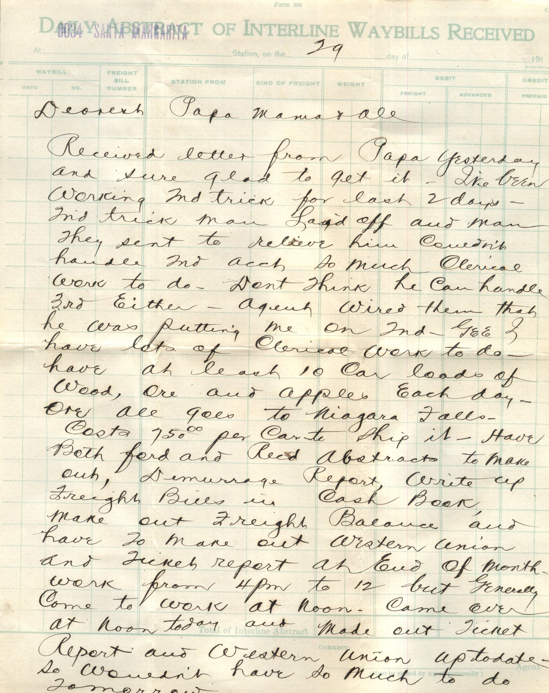
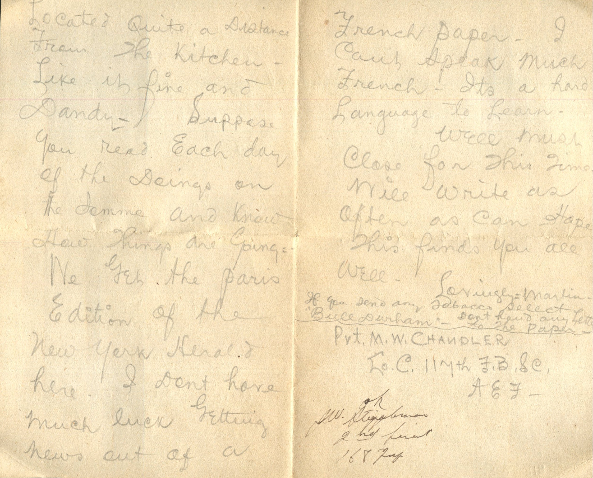
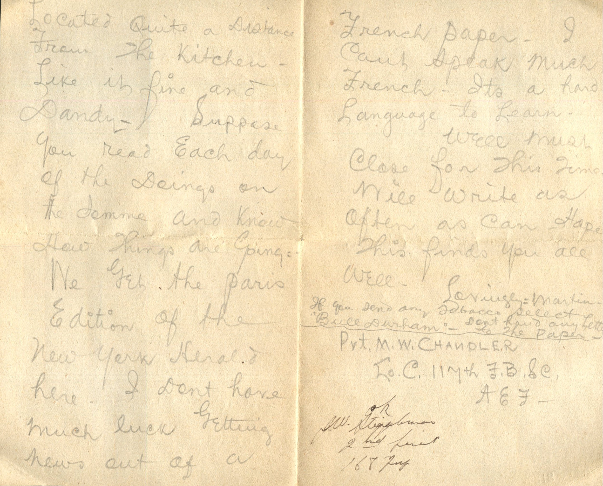
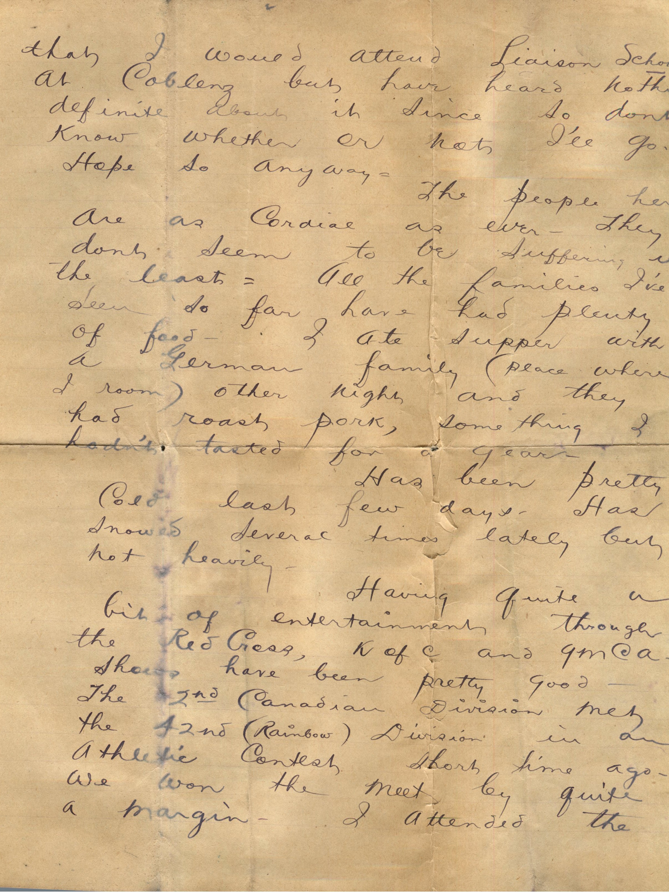
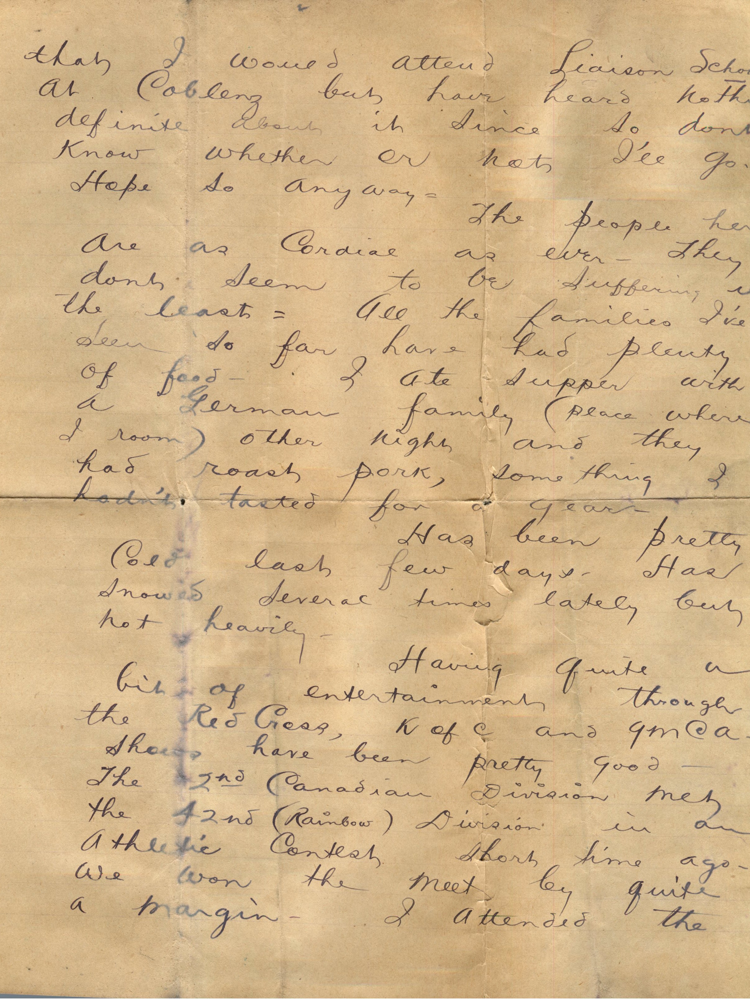

From: Martin Chandler, To: Elijah H. Chandler
Mailed From: Santa Margarita, California
M.W. Chandler
Santa Margarita, Cal
8034 Santa Margarita
Mr. E.H. Chandler
Pearl, Ill
Pike Co
Dearest Papa, Mama, and All
Received letter from Papa yesterday and sure glad to get it. I've been working 2nd trick for last 2 days. 2nd trick man laid off and man they sent to relieve him couldn't handle 2nd account so much clerical work to do. Don't think he can handle 3rd either. Agent wired them that he was putting me on 2nd. Gee I have lots of clerical work to do. Have at least 10 car loads of wood, ore, and apples, each day. Ore all goes to Niagara Falls. Costs $750.00 per car to ship it. Have both Ford and Reed abstracts to make out, damage reports, write up freight bulls in cash book, have to make out Western Union and Tuckit report at end of month. Work from 4 pm to 12 but generally come to work at noon. Came over at noon today and made out ticket report and Western Union up to date. So wouldn't have so much to do tomorrow. I'll be on this job for about a week longer and when regular 2nd tick man comes back agent said he would see that I got the 3rd trick back. He came over to hotel and awakened me and asked if I would work 2nd trick. I like the job OK. Get lots of good sleep now. I have 3 passenger trains to sell tickets for and both locals and 2 regular freight trains on this trick but don't have to get outside of office. Local conductors unload freight and wheel it in warehouse and seal cars and baggage boy handle the passenger trains and check baggage. All I have to do is make out switch lists and clear them. Have quite a few orders but not as many on 3rd trick. Both locals get along between 10 and 11 pm.
Only thing I don't like about this job is having to work evenings. I've been going up to see a bunch of school teachers every night and have lots of fun. Two of them are Catholic and I get into some awful arguments with them some times. All nice girls though. Always have some candy made or a bunch of fruit. Have a swell Victrola and two of them play the piano.
How's Knox getting along in school? Is Uncle Jim any better? Hope Aunt Sarah is ok.
Well must stop and get busy. Hope you all write soon. Lucerne I haven't heard from you for a long while. Guess Hipockets is waiting till he learns to spell before he writes. Ha. Will write again soon.
Lovingly,
Martin


 

 
